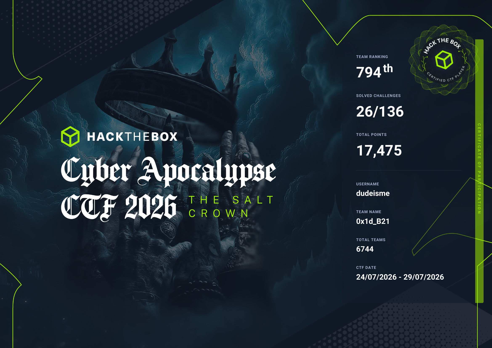
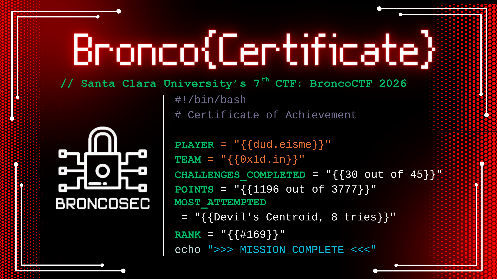
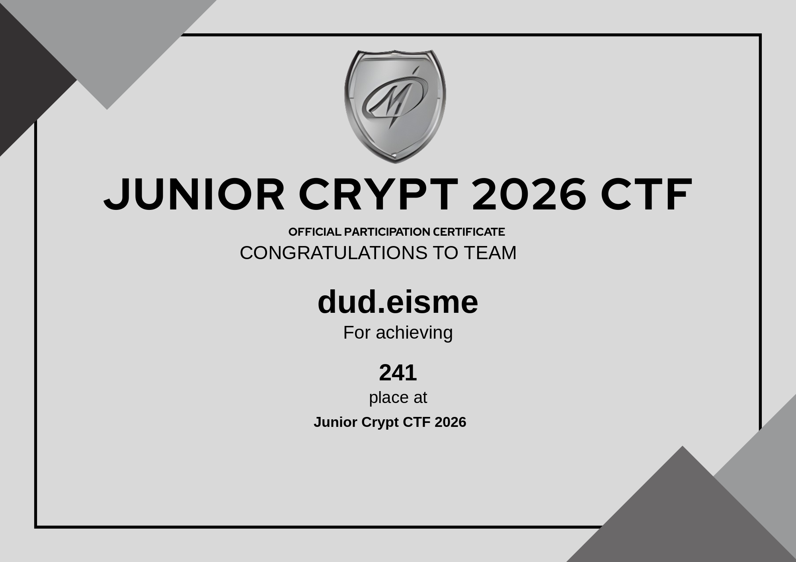

CSE student · Cybersecurity · Systems programming · Linux
Building low-level tools from scratch to understand how things work — custom shells, time-limit execution engines, and CLI utilities. Competing in CTFs, Active on Codeforces & LeetCode.
I'm a Computer Science and Engineering student at NIT, Surat focused on low-level systems programming, tool development, and backend infrastructure.
I prefer building things from scratch to understand how they work under the hood, from custom terminal shells to time-limit execution engines. Right now I'm focused on optimized CLI tools and expanding my knowledge of systems architecture.
Outside of personal projects, I compete in CTFs and put in regular reps on Codeforces and LeetCode — mostly for the same reason I like systems work: it forces you to actually understand what's happening instead of trusting a black box.
02cat skills.yaml
languages:
C·C++·Rust·Python
# C/C++ for systems work, Rust for the OS project, Python for tooling & scripts
environment:
Arch Linux·Git·Docker·Neovim (Lua)
# daily driver setup, configured from scratch rather than out of the box
focus:
Systems Programming·Operating Systems·Backend Infra·Competitive Programming
# where I spend most of my actual build/study time
tools:
Binary Ninja·Wireshark·GDB·Burp Suite
# CTFs & reverse engineering — where the systems knowledge gets tested
03cat education.log
Sardar Vallabhbhai National Institute of Technology, Surat
Bachelor of Technology (B.Tech) — Computer Science
2025 — 2029 · Ichchhanath, Surat, Gujarat, India
04cat certifications.log
Hack The Box · Team 0x1d_B21 · Rank 794/6744·26/136 solved·17,475 pts

Event"The Salt Crown" · Hack The Box
Usernamedudeisme
Dates24 Jul 2026 – 29 Jul 2026
Field6,744 teams competed
Santa Clara University's 7th CTF · BroncoSec·Team 0x1d.in·Rank #169·1196/3777 pts

HostBroncoSec, Santa Clara University
Challenges30 of 45 solved
Toughest solve"Devil's Centroid" — 8 attempts
Official participation certificate · Team dud.eisme · 241st place

FormatTeam-based cryptography CTF
Result241st place
05ls -la projects/
Custom Unix shell & REPL with a raw-mode terminal engine (direct termios control), dynamic multiline input wrapping, and a Git-aware prompt that tracks repo state in real time.
drop a screenshot here — gits-shell.png
Raw mode engine — bypasses line buffering (ICANON) and echo (ECHO) via termios to read raw keystrokes in real time.
Smart multiline wrapping — queries terminal columns via ioctl to keep the cursor in sync with the input buffer across wraps.
Ctrl+C handling — overrides kernel signals to cleanly clear only the active input line using terminal escape codes, without touching scrollback.
Process isolation — spawns external binaries via fork() / execvp(), suspending raw mode during execution.
Git awareness — detects local .git directories and attaches live repo context to the prompt.
A touch-control server for Hyprland — turns any phone or tablet on your LAN into a physical deck for your desktop, talking directly to Hyprland, PipeWire, playerctl, and brightnessctl.
drop a screenshot here — hyprdeck.png
Touch UI over LAN — serves a lightweight web UI any device on the network can open to control the desktop.
Workspace & window control — switches Hyprland workspaces and focuses windows via hyprctl dispatch calls.
Media & system control — volume and brightness via wpctl / brightnessctl, playback via playerctl.
Runs as a service — deployable as a systemd user unit, wired into graphical-session.target for boot-time start.
Built with FastAPI/uvicorn — Python backend serving both the API and the touch UI.
A command-line archiving & compression tool built on zlib, with a custom CLI for packing and extracting files.
drop a screenshot here — archiver.png
A from-scratch archiver/compressor built on zlib, compiled with g++ and linked against pthread. Run the binary with no arguments to print available commands — a small, self-contained project built for the fun of understanding how archive formats actually work.